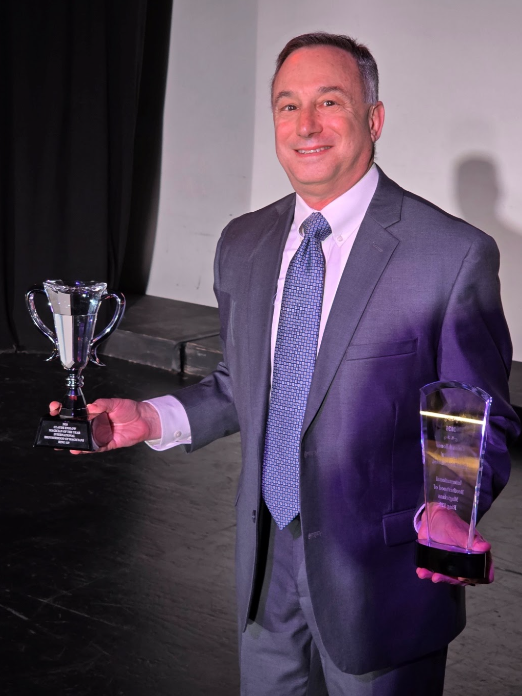
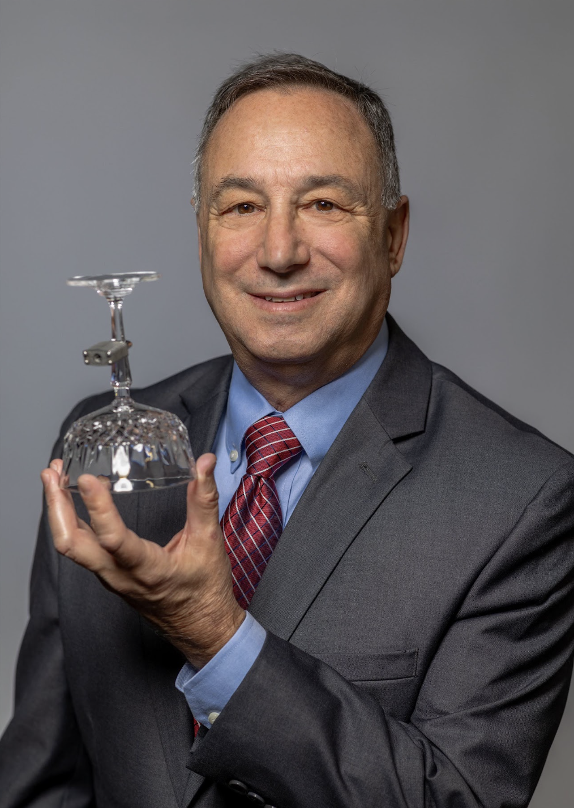

Larry Warshaw has been delighting audiences around the world for decades.
Larry's style of magic provides one magical surprise after another, all in a funny and entertaining way.
Companies take advantage of Larry's charming wit to deliver their message with a magic touch. The Magic of Larry Warshaw can educate, motivate, and captivate any audience!


Larry arrives early, learns the room, and finds out who's in it. By the time the lights go down he knows which table wants to be part of the show and which one only thinks it doesn't.
A keynote is forgotten by Monday. A magic trick built around your launch line is repeated at the desk for weeks. That's the whole pitch, and Larry has been proving it for decades.